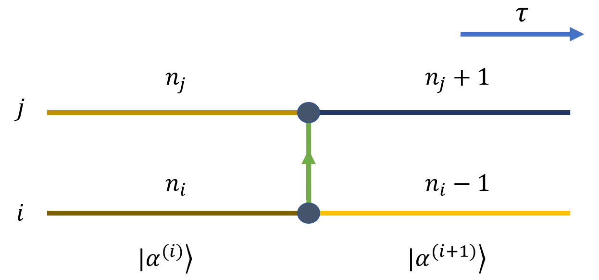
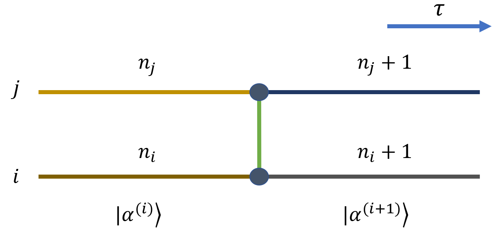
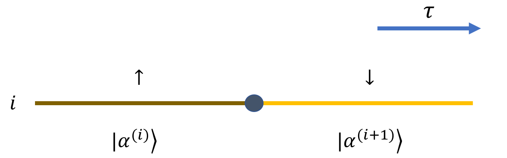
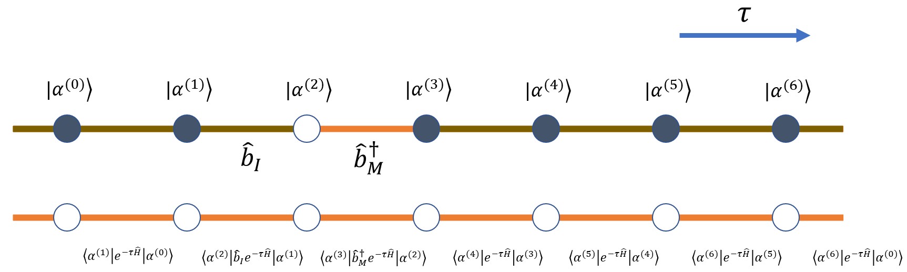
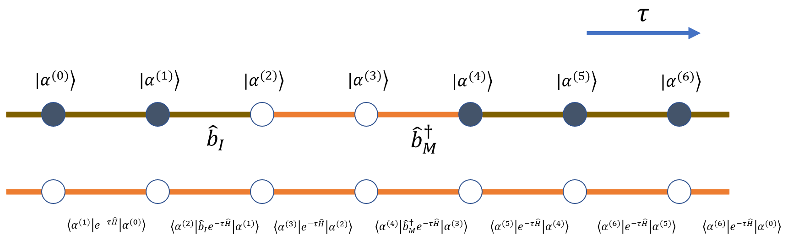

连续时间的世界线 Worm 算法¶
概述¶
考虑一个晶格系统的哈密顿量 \(\hat{H}\), 对于完备的基矢量 \(\alpha\)，配分函数可以写为：
在这里，哈密顿量可以视为一个很大的矩阵，其基矢量通常是在 Fock 空间下展开的。
若 \(\hat{H}\) 矩阵是 1x1 的，即 c-number，态 \(|\alpha\rangle\) 是归一化的数字，即1. 从而，\(\mathcal{Z}\) 便退化为经典模型的配分函数。不难看出，相比经典模型，量子模型的权重因为存在算符 \(e^{-\beta \hat{H}}\) 不是那么容易就能写出，需要利用完备性关系插入完备的基矢量， 多了一层对态 \(|\alpha\rangle\) 演化的求和过程，这体现在其增加了虚时方向的维度，即世界线。
其中 \(e^{-\beta \hat{H}}\) 可以和时间演化算符 \(e^{-i\hat{H}t}\) 进行类比，我们定义虚时 $\beta = it $. 为了将配分函数捣鼓成可计算的形式，进而构建随机过程来进行蒙卡模拟，我们有多种选择，下面列举一些常见的做法。注意，为了方便起见，这里不考虑符号问题。
(1) 对于费米子体系:
费曼图蒙卡 (DiagMC) : 类比实时量子场论的做法，从虚时演化算符与其格林函数出发，利用微扰论展开得到均值表达式，通过对费曼图的抽样，直接得到热力学极限下的观测量。
行列式蒙卡 (DQMC) : 以 Hubbard 模型为例，对于 hopping 项，利用等式 \({\rm Tr} [ e^{-\sum_{i,j} A_{i,j} \hat{c}_{i}^\dagger\hat{c}_j } ] = {\rm Det} [{\bf 1}+e^{-{\bf A}}]\)
将权重转化为行列式；对于相互作用项，利用 Hubbard-Stratonovich 变换引入辅助场进行解耦。(2) 对于玻色子或自旋体系：
随机级数展开 (SSE) : 利用展开 \(e^{-\beta \hat{H}} = \sum_{n=0}^{\infty} \frac{\beta^n}{n!}(-\hat{H})^n\), 将指数上的哈密顿量放下来，从而能够通过写出矩阵元 \(\langle \alpha^{(i+1)} |\hat{H}| \alpha^{(i)} \rangle\) 来计算权重，设计算法。
配分函数空间 \(\mathcal{Z}\)¶
对于世界线的 Worm 算法，其将虚时 \(\beta\) 离散化为等分的 \(N\) 段，即取小量 \(\tau = \beta / N\), 再通过插入完备基矢量的方法可以将配分函数写为如下的积和式：
其中 \(\alpha^{(0)}\) 与 \(\alpha^{(N)}\) 表示同一世界面。它们来自原始求迹
中 \(e^{-\beta\hat H}\) 左右两边所夹的同一个基矢量。求和符号下标
表示对整条基矢量序列求和，该序列包含
共 \(N\) 项。最后，
记为这条序列对应的构型权重。
值得注意的是，尽管这里的求和遍历了序列 \(\lbrace \alpha^{(i)} \rbrace\) 所有的可能性，但是有些可能性会使得连乘式当中出现值为 0 的项，从而导致整个序列对配分函数的权重不做贡献。而判断是否出现值为 0 的项，则需要分析哈密顿量的具体形式，并且通常取决于 hopping 等具体形式，具体分析如下。
构型的权重¶
对配分函数其中的一个重复单元有:
其中 \(\boxed{\hat{H} = \hat{H}_0 + \hat{V}}\) , 前者为所选基矢量下的对角项，后者是非对角项。第一个近似利用到了 Trotter 分解，即：
第二个近似是根据 \(\tau\) 为小量而进行的泰勒展开，并展开到1阶。事实上，也可以展开到高阶，但一方面高阶小量一般都会忽略掉；另一方面，通过推导不难发现这与仅考虑一阶的效果是等价的。这一点在后面的具体例子当中会详细解释。
注意，上式当中的 \(H_0\) 若不含虚数，表示的是 \(\langle \alpha^{(i+1)}|\) 的对角能量，因为 \(\langle \alpha^{(i+1)}| e^{-\tau \hat{H}_0} = e^{-\tau H_0} \langle \alpha^{(i+1)}|\). 但实际上由于世界线都是首尾相连的圈，故无论是 \(\langle \alpha^{(i+1)}|\) 还是 \(|\alpha^{(i)}\rangle\) 的对角能量，经过最终的求和都会得到相同的值。
通常非对角项 \(\hat{V}\) 会改变原本的态，因此根据表达式
我们不难分析出，当序列 \(\lbrace \alpha^{(i)} \rbrace\) 相邻的两个态没有发生变化时，上式第二项由于 \(\hat{V}\) 的作用，会使两边原本一样的态变得正交，从而做内积之后会消失，仅有第一项有贡献。 相反，若相邻的两个态发生了变化并满足 \(\langle \alpha^{(i+1)}| \hat{V} |\alpha^{(i)} \rangle \neq 0\) 时，上式第一项会消失，仅有第二项有贡献；若不满足，则两项均无贡献。
根据上面的性质，我们可以将配分函数的权重进行合并来写出显式。我们将一个序列 (或称为一个世界线构型) 当中相邻的态 (或相邻的世界面) 发生改变的次数计为 \(\mathcal{K}\), 从而我们可以写出构型的权重为：
其中 \(i(k)\) 表示第 \(k+1\) 个发生改变的虚时层数。对于 \(\mathcal{K} \geq 2\) 情况下，\(\lbrace \alpha^{(i(k))} \rbrace\) 表示发生改变前的 \(\mathcal{K}\) 个态组成的序列； \(\mathcal{K} = 0\) 时，世界线上的态均一致，不会发生变化，因此仅表示一个态组成的序列；而 \(\mathcal{K} = 1\) 通常不可能发生，这是因为改变一次态之后，需要至少再改变一次才能回到初态，满足世界线为首尾相连圈的要求。相比原始形式的求和，上述形式的权重相当于将序列根据发生改变次数进行分类，关系如下：
注意，虽然改变次数 \(\mathcal{K}\) 可以从 0 取到 \(\infty\), 但对于 \(\mathcal{K} = 0,1\) 的时候，需要特殊考虑。 而改变发生的时刻的虚时层数 \(i(k)\) 也有如上的取值方法，遍历了所有可能的情况。除此之外，发生改变的格点位置并未指定，仍需要通过求和 \(\sum_{\lbrace \alpha^{(i(k))} \rbrace}\) 来筛选满足 \(\langle \alpha^{(i+1)} |\hat{V}|\alpha^{(i)} \rangle \neq 0\) 的构型，其中 \(\lbrace \alpha^{(i(k))} \rbrace\) 在不同 \(\mathcal{K}\) 值的情况下要分类讨论。
总的来说，以上几式仅对 \(\mathcal{K} \geq 2\) 的情况严格成立，并且相比原始形式，似乎权重的形式变得更加复杂了，但由于写出了显式，成为之后设计算法的基石。
当 \(N\rightarrow\infty\), 可将小量 \(\tau\) 取为微元 \(d\tau\), 同时原本离散的序列也变为连续的函数 \(\alpha(\tau)\), 可将权重写为连续变量的形式，更符合路径积分的风格：
\[ W(\mathcal{K},\tau(k),\lbrace \alpha(\tau(k)) \rbrace) = (-d\tau)^{\mathcal{K}} \prod_{k=0}^{\mathcal{K}-1}\langle \alpha({\tau}(k) + d\tau)|\hat{V} | \alpha({\tau}(k)) \rangle \exp \left({-\int_{0}^{\beta} H_0(\tau') d\tau'} \right) \]其中 \(\tau(k)\) 表示第 \(k+1\) 个发生改变的虚时时刻。 总的来说，可将配分函数写为如下的求和形式：
\[ \sum_{\mathcal{K}=0}^{\infty} \int_{0}^\beta \int_{\tau(0)}^\beta \cdots \int_{\tau(\mathcal{K}-2)}^\beta \sum_{\lbrace \alpha(\tau(k)) \rbrace} W(\mathcal{K},\tau(k),\lbrace \alpha(\tau(k)) \rbrace) \]事实上，笔者更喜欢权重的离散化表示，因为在实际计算机进行模拟的时候，归根到底仍然是在处理离散的数组。从而后续的推导均采用离散的形式。
几种常见的非对角项¶
现在我们知道，要想解析地写出权重表达式 \(W\)，计算非对角项矩阵元 \(\langle \alpha^{(i+1)}|\hat{V} | \alpha^{(i)} \rangle\) 必不可少。 为了更加形象，我们需要利用图像可视化表达世界线构型的细节。我们考虑世界面数目 \(N = 7\) 的构型，如下图所示：
{kind=link}
世界面上的态由 \(|\alpha^{(0)}\rangle\) 到 \(|\alpha^{(6)}\rangle\) 表示，相邻态或世界面之间的演化 \(\langle \alpha^{(i+1)} | e^{-\tau \hat{H}}| \alpha^{(i)} \rangle\) 在图中有所标注，清晰地展示了世界线权重的对应关系。不难看出，虚时演化 \(e^{-\tau\hat{H}}\) 是作用在两个世界面之间的，相当于具有 bond 而非 site 的性质。而世界线构型的本质是一系列世界面组成的集合，仅靠世界面上的信息足以完整表达，只不过唯有那些正好满足虚时演化算符的构型才对配分函数有贡献，这一点很关键。因此只要图中世界面上的态确定，无论中间的连接方式如何表达都是等价的。故为了消除这种任意性，我们可以规定，如图从左到右沿着虚时方向，两个态之间所夹线段表示左边态的延申。例如图中深色节点与棕色线段，白色节点与橙色线段。
当相邻的态发生变化时，例如 \(|\alpha^{(1)}\rangle\) 与 \(|\alpha^{(2)}\rangle\) 之间，\(|\alpha^{(3)}\rangle\) 与 \(|\alpha^{(4)}\rangle\) 之间，说明存在非对角项 \(\hat{V}\), 图中以 hopping 为例（详细定义见后文）展示效果，即可以用竖线将同一时间的两格点进行连接（也可以用斜线连接不同时间的两个格点）。只要一切从世界面上的态（点）出发，去构建虚时演化（线）组成世界线构型都是正确的。
由于算法当中时间近乎是连续的，因此我们之后的图示当中只展示虚时演化的线段，仅在态发生改变时才用 “点” 标注态发生了变化，且这里的 “点” 不会像上图那样还反映出不同格点的具体值，仅仅是一种标记而已。值得一提的是，这种简化表达仍是正确的，当有歧义时，再回到上图的结构当中去思考，便不会出错。
(1) hopping 项 :
上式表明，\(\langle \alpha^{(i+1)} |\hat{V}|\alpha^{(i)} \rangle\) 项不为 0 即要求构型 \(|\alpha^{(i+1)} \rangle\) 和 \(|\alpha^{(i)} \rangle\) 之间相差一个最近邻的 hopping.
严格来说，\(e^{-\tau \hat{V}}\) 展开到一阶只能允许同一时刻发生一次最近邻的 hopping, 发生多次需要我们展开到更高阶重新写出权重。然而一方面在连续时间算法当中，世界面的数目 \(N\) 取为 \(10^8\) 量级，构型刚好出现同一时刻多次 hopping 的概率非常小；另一方面，即使考虑高阶项，我们不难发现当我们展开到 \(n\) 阶的时候 \(\frac{\hat{V}^n}{n!}\) 项正好对应于同一时刻发生 \(n\) 次 hopping 的权重，这与我们独立地展开到一阶，在必要时（刚好更新到同一时刻出现多次改变的构型）让各项相乘得到的结果完全一致。即有如下的等式：
\[ \frac{1}{n!}\langle \alpha^{(i+1)},n| \hat{V}^n | \alpha^{(i)}, 0\rangle = \langle \alpha^{(i+1)},1| \hat{V} | \alpha^{(i)}, 0\rangle^n \]其中态 \(|\alpha^{(i+1)},n\rangle\) 表示发生了 \(n\) 个 hopping 的态。如上式考虑高阶项之后，系数 \(\frac{1}{n!}\) 正好平均掉了多次作用 \(\hat{V}\) 出现的相同的冗余项，不难发现其就等价于仅考虑一阶然后多次相乘的结果，如等号右边所示。
考虑一个从格点 \(i\) 跃迁到格点 \(j\) 的过程贡献：
注意 \(\alpha^{(i)}\) 当中的 \(i\) 是对构型中不同世界面的指标，而 \(\hat{b}_i\) 当中的 \(i\) 是对某一个世界面当中不同格点的指标。
其中 \(n_i\) 与 \(n_j\) 表示跃迁发生之前格点 \(i\) 与 格点 \(j\) 所拥有的粒子数。
具体情况如下图所示：

{kind=link}
(2) pairing 项 ：
上式表明，\(\langle \alpha^{(i+1)} |\hat{V}|\alpha^{(i)} \rangle\) 项不为 0 即要求构型 \(|\alpha^{(i+1)} \rangle\) 和 \(|\alpha^{(i)} \rangle\) 之间相差一个最近邻的 pairing.
考虑从某一虚时刻，格点 \(i\) 和格点 \(j\) 同时增加一个粒子的贡献为：
类似于 hopping 项，具体如下图：

{kind=link}
(3) flipping 项 ：
上式表明，\(\langle \alpha^{(i+1)} |\hat{V}|\alpha^{(i)} \rangle\) 项不为 0 即要求构型 \(|\alpha^{(i+1)} \rangle\) 和 \(|\alpha^{(i)} \rangle\) 之间在同一格点相差一个 flipping.
考虑一个 \(|\uparrow\rangle\) 态在某一虚时刻改变为 \(|\downarrow\rangle\) 态，其贡献为：
其中 \(x\) 方向的泡利矩阵，相当于对自旋态做翻转。通常来说，自旋体系对系数的贡献都是 1. 具体如下图：

{kind=link}
格林函数空间 \(\mathcal{G}\)¶
上述的构型权重所在的相空间被称为配分函数空间 \(\mathcal{Z}\)，这是因为其构型完全符合物理上世界线的定义。然而，算法中为了高效地更新构型，我们引入具有两个缺陷（不连续点, worm）的世界线构型空间 \(\mathcal{G}\), 由于该空间的配分函数正比于松原格林函数的求和，也被称为格林函数空间。从而，蒙卡抽样的完整空间 \(\mathcal{Z}_w\) 可写为：
其中 \(\omega_G\) 为可调的参数，用于控制两空间的占比。
在玻色系统当中，两个缺陷分别由产生算符 \(\hat{b}^\dagger_{M}\) 与湮灭算符 \(\hat{b}_{I}\) 所表示, 且分别位于虚时 \(\tau_M\) 与 \(\tau_I\), 则我们可以定义函数为:
注意其中的产生湮灭算符均在海森堡绘景下，且 \(\mathcal{T}\) 为编时算符。 虚时 \(\tau_M\) 与 \(\tau_I\) 的取值为 0 到 \(\beta\)（而 \(\tau\) 则表示一个很小的量）, \(I\) 与 \(M\) 表示格点标号。我们将海森堡绘景的虚时演化代入，并假设 \(\tau_M < \tau_I\)，不难整理得到：
反之 \(\tau_M > \tau_I\) 也是类似的。上式的物理意义十分清晰，即在 \(\tau_M\) 与 \(\tau_I\) 虚时时刻，世界线某一格点上的粒子态增加或减少了一个粒子。
值得注意的是，之前也提到过由于世界面的数目 \(N\) 极其之大，虚时完全可以看作是连续的，因此在同一虚时时刻默认最多只发生一次态的改变。根据该特性，既然已知在 \(\tau_M\) 与 \(\tau_I\) 虚时时刻，态会由于 \(\hat{b}^\dagger_{M}\) 与 \(\hat{b}_{I}\) 发生改变，那么就不会由于 \(\hat{V}\) 的作用而发生改变，即有如下代换：
\[ \langle \alpha^{(i(I)+1)}|\hat{b}_I e^{-\tau \hat{H}} | \alpha^{(i(I))} \rangle \rightarrow e^{-\tau H_0} \langle \alpha^{(i(I)+1)}|\hat{b}_I| \alpha^{(i(I))} \rangle \]其中 \(i(I)\) 表示 \(\tau_I\) 对应的虚时层数。类似地，也可以定义 \(i(M)\). 严格来说，上式需要额外再加一层完备基矢量，然而由于同一虚时只发生一次改变的要求，故加的基矢量是没有自由度的，只能与 \(|\alpha^{(i(I))} \rangle\) 相同才有贡献，即：
\[ \langle \alpha^{(i(I)+1)}|\hat{b}_I | \alpha^{(i(I))} \rangle \langle \alpha^{(i(I))} | e^{-\tau \hat{H}} | \alpha^{(i(I))} \rangle \]因此我们并不需要增加额外的标识，即世界面仍为 \(N\) 个。事实上，尽管 \(\hat{V}\) 项有贡献，我们稍微做修改：
\[ \langle \alpha^{(i(I)+1)}|\hat{b}_I | \alpha^{(i(I)')} \rangle \langle \alpha^{(i(I)')} | e^{-\tau \hat{H}} | \alpha^{(i(I))} \rangle \]即假设一个虚态 \(|\alpha^{i(I)'}\rangle\) 作为中间过程，以此解决同时发生跃迁 \(\hat{V}\) 以及缺陷 \(\hat{b}_I\) 的作用。
为了写出权重的显式，利用上面的技巧以及前面的做法，我们先写出函数 \(g\) 的展开形式：
其中多出来的缺陷 (worm head) 的权重的贡献： \(\sqrt{n_I (n_M + 1)}\), 而 \(n_I\) 与 \(n_M\) 分别为相应算符作用前的粒子数。对于硬核玻色子 (hard-core) 的情况，这个系数通常是 1.
相应地，松原格林函数可以定义为：
不难看出，测量上述的格林函数，只需统计两缺陷的时空分布（直方图）即可，这在格林函数空间 \(\mathcal{G}\) 是可以直接测量的，十分方便。
此外，该空间当中的配分函数写为:
即对两缺陷处于时空的所有可能情况进行求和，注意严格来说，要除去处于同一格点同一虚时时刻的情况，因为两缺陷完全在一个时空位置相当于回到了配分函数空间 \(\mathcal{Z}\), 只不过相差一个系数而已。这里 \(N_s\) 表示一个世界面当中的格点数目，\(N\) 表示世界面的个数。变量 \(p_I,p_M\) 表示虚时层数的标号，注意需要在求和时添加虚时最小间隔 \(\tau^2\), 对应到连续化后的 \(\int_0^\beta \int_0^\beta d\tau_I d\tau_M\) 当中的 \(d\tau_I d\tau_M\).
这里似乎会有疑问，相比配分函数空间权重当中的 \(\tau^{\mathcal{K}}\), 这里的 \(\tau^2\) 似乎是额外添加的。事实上，这是因为配分函数本身就是一个数字，已经包含了完整的求和变量等；而这里拓展的格林函数空间并没有完整的求和变量，而且函数 \(g\) 的求迹过程并不包含对两个缺陷的时空坐标的求和，需要外部添加才行。另一方面，对格点求和，由于间隔为 1, 故不需要添加求和变量；而对虚时的求和，随着 \(N\) 不断增大，虚时的划分越来越精细，如果直接求和必然无法收敛，肯定要添加求和变量 \(\tau^2\) 使得函数收敛。这一点在连续化时间之后很好理解，但在离散化形式下确实需要洞察力。
综上，我们可以将格林函数空间的权重写为：
对应的求和可以写为：
对于自旋体系，也可以有类似定义：
\[ g(I,M,\tau_I,\tau_M) = {\rm Tr}[\mathcal{T} \hat{\sigma}_I^{x}(\tau_I) \hat{\sigma}_M^{x}(\tau_M) e^{-\beta\hat{H}}] \]
对于格林函数空间的构型，我们有必要再次回到如下初始的世界线表示当中。需要注意两个缺陷的算符仅作用在线段上，因此它们最近可以形成如下的结构：

{kind=link}
其中态 \(|\alpha^{(1)} \rangle\) 被湮灭掉一个粒子演化到态 \(|\alpha^{(2)} \rangle\)，之后再产生一个粒子演化到态 \(|\alpha^{(3)} \rangle\). 产生湮灭算符的位置如图下方所示，展现了该构型对应的权重表达式。注意，为了引入两缺陷，至少得有一个世界面的态增减粒子，即态 \(|\alpha^{(2)}\rangle\).
让两缺陷距离稍远一些，则可以表示为下图的结构：

{kind=link}
上图的结构在连续时间的算法当中是 trivial 的，这是因为我们通常聚焦于世界线上的线段；而当我们思考连续空间的算法时，因为两个相邻世界面的构型大概率是不同的，我们不再能用线段简化表达，必须从虚时的离散化本质出发考虑问题。
构型的更新¶
为了尽可能少的占用内存，我们不可能将每个虚时的态都存下来，那样会占用 \(O(N N_s)\) 的空间内存。为此，我们引入类 segment 用于存储量子态一致的一段世界线，包含了量子态、起始时刻、长度、发生跃迁和前后衔接的其他片段等等。从而，我们的空间内存可以减少到 \(O(\beta N_s)\) 的量级。
一般地，构型的更新在 \(\mathcal{Z}_w = \mathcal{Z} + \omega_G\mathcal{G}\) 空间当中进行。然而有些模型，我们并不需要考虑配分函数空间 \(\mathcal{G}\), 例如横场伊辛模型：
对于这类模型，世界线上的某一格点上的态独立变化，并不依赖于其他格点，这是由于上述 \(\hat{V}\) 的特殊形式导致的。因此我们并不需要引入两个缺陷（蠕虫），而是将发生改变的结点叫做 Cut, 通过移动 Cut 或者创建和删除新旧 Cut 便可以遍历该世界线的所有构型。因此，有如下两种更新手段：
Shift Cut¶
{kind=link}
如图所示，当我们以概率 \(p_{\rm shift}\) 触发该操作，我们首先在 \(N_{\rm seg}\) 个世界线片段当中随机选中一个，如上图长度为 \(L_a\) 的片段（若选取的片段为纯粹的圈，没有任何的 Cut, 我们拒绝这次更新）。我们规定移动片段当中沿着虚时方向靠右的红色 Cut, 为了确定移动的方向和距离，我们从相邻的两个 Cut 组成的长度为 \(L_a + L_b\) 的片段当中随机选择一个时刻，由于最短的虚时单位为 \(\tau\), 因此细致平衡等式如下：
其中旧构型记为 \(\nu\) 如图中上半所示，更新后的新构型记为 \(\nu'\) 如图中下半所示。反过来，从新构型返回到旧构型，则需要在如图的长度为 \(L_a' + L_b'\) 的片段当中选择。综上，我们得到该更新操作的接受概率如下：
即我们只需计算更新前后的对角能量之差即可。
Create/Delete Segment¶
{kind=link}
如图所示，我们以 \(p_{\rm creseg}\) 的概率触发增加片段的更新之后，首先在 \(N_{\rm seg}\) 个世界线片段当中随机选中一个，如图上半长度为 \(L\) 的片段。之后，我们在其中随机选择如图下半的红蓝两点作为插入片段的起始点和终止点，注意由于红蓝两点前后的位置是等价的，因此抽到相同长度的概率要乘以因子2. 反之，删除片段则是选中之后直接删除。因此，细致平衡等式如下：
Create Segment
对于增加片段的接受概率，我们可以解出为：
对于横场伊辛模型，其中 \(\langle \alpha^{(i(k)+1)} |\hat{V}| \alpha^{i(k)} \rangle = -h\), 以及注意由于构型权重 \(W(\nu')\) 比 \(W(\nu)\) 多了 \(\tau^2\), 因此被同时约掉了。
Delete Segment
同理，我们可以得到删除一个片段的接受概率：
通常，我们将概率设为满足如下等式的值：
事实上，对于横场伊辛模型，我们也可以强行使用 Worm 算法进行更新，这需要我们将 Pauli 矩阵的基矢量变换为如下的形式：
从而利用 Holstein-Primakoff 变换可以将 \(\hat{V}\) 变为硬核玻色子的 hopping 和 pairing 项，从而进行 Worm 更新。
由于 pairing 项略显特殊，我们从仅含 hopping 项的 Bose-Hubbard 模型为例，展示构型在 \(\mathcal{Z}_w\) 空间当中的更新。
如上式，对于存在 hopping 项的玻色格点系统，通常有如下三种更新，其中前两个分别指的是 Worm 在虚时方向移动以及在格点空间方向移动，第三个则是在 \(\mathcal{Z}\) 空间与 \(\mathcal{G}\) 空间当中转换。 值得注意的是，为了算法的简洁性，我们通常固定 \(\hat{b}^\dagger_M\) 而仅移动 \(\hat{b}_I\) 进行更新。
Shift Worm¶
{kind=link}
如图所示，类似于更新 Shift Cut 的过程，这里不同的是更新是在 \(\mathcal{G}\) 空间进行的，因此要考虑因子 \(\omega_G\), 具体的细致平衡等式如下：
我不难得到该更新的接受概率如下：
Create/Delete Kink¶
除了上述 \(\hat{b}_I\) 在虚时方向移动，还需使 \(\hat{b}_I\) 在格点空间方向移动。最简单的做法是不改变 \(\hat{b}_I\) 所在的虚实时刻，仅改变其空间方向的坐标。另一方面，考虑到湮灭算符的性质，我们需要将更新分成如下两类进行讨论，即更新之后的 hopping 在 \(\hat{b}_I\) 之前还是在之后的问题（沿着虚时方向）。这里的 hopping 也可以称为 Kink, 表示两格点之间态的一种改变。
如下图所示，沿着虚时方向，更新后的 Kink 在 \(\hat{b}_I\) 之前。因此世界线呈现图中的结构。
{kind=link}
首先，我们以 \(p_{\rm crekb}\) 的概率选中该更新，之后在 \(\hat{b}_I\) 所处格点的最近邻的格点中选取其一，组成图中上半的两条世界线，并假设被选中的格点上的世界线对应位置的粒子数为 \(n\). 之后我们将 \(\hat{b}_I\) 移动到选中的世界线上面，如下半图。然后抽取如图长度为 \(L_a\) 片段中的一个点作为 Kink 发生的虚时时刻，根据产生湮灭算符的基本规则，不难标出上图的粒子数。其中 \(n_I\) 表示旧构型当中 \(\hat{b}_I\) 之前的粒子数，而 \(n_I'\) 表示新构型当中 \(\hat{b}_I\) 之前的粒子数。反之，若要删除一个 Kink, 只需沿着 \(\hat{b}_I\) 之前的 Kink 方向，将 \(\hat{b}_I\) 归到原位即可。由此，细致平衡等式如下：
其中配位数也是最近邻格点数为 \(z\), 注意权重当中 worm head 的权重以及 Kink 的权重都要考虑到，从而得出增加 Kink 的接受概率和删除 Kink 的接受概率如下：
Create Kink Before
对于 Bose-Hubbard 模型有 \(\langle \alpha^{(i(k)+1)} |\hat{V}| \alpha^{i(k)} \rangle = - t\sqrt{n_I n_I'}\). 事实上，由于我们固定 \(\hat{b}_M^\dagger\) 不动，\(n_M = n_M'\), 从而 worm head 和 kink 的权重综合起来的贡献为 \(t n_I' = t (n+1)\).
Delete Kink Before
对于删去操作，worm head 和 Kink 的权重综合起来的贡献为 \(\frac{1}{t n_I'} = \frac{1}{t (n+1)}\).
如图所示，当 Kink 发生在 \(\hat{b}_I\) 之后，步骤类似，只不过我们需要在如图的长度为 \(L_b\) 的片段当中选择 Kink 发生的虚时时刻，并且注意根据湮灭算符的效果将世界线上的粒子数写出正确的关系。
{kind=link}
从而有类似的细致平衡的等式：
以及增加和删除的接受概率：
Create Kink After
对于这里的增加操作，worm head 和 Kink 的权重综合起来的贡献为 \(t n_I' = t n\).
Delete Kink After
对于这里的删去操作，worm head 和 Kink 的权重综合起来的贡献为 \(\frac{1}{t n_I'} = \frac{1}{t n}\).
Create/Delete Worm¶
最后，对于 \(\mathcal{Z}\) 空间和 \(\mathcal{G}\) 之间的转换，情况略微复杂一些。若处于 \(\mathcal{G}\) 空间当中，则以 \(p_{\rm delw}\) 的概率选中删除 Worm 的操作，并判断 \(\hat{b}_I\) 和 \(\hat{b}_M^\dagger\) 是否在一个片段的两端，若满足则删除 Worm.
当构型属于 \(\mathcal{Z}\) 空间时，以 \(p_{\rm crew}\) 的概率尝试产生 Worm, 通常设 \(p_{\rm crew} = 1\). 首先从 \(N_{\rm seg}\) 个片段中随机选择其中之一，若片段为非圈的情况，此时如下两图，在其长度 \(L\) 当中抽出两个时刻作为 \(\hat{b}_I\) 和 \(\hat{b}_M^\dagger\) 的时间位置，并且它们之间的前后位置产生的效果略有不同，如下两图所示：
{kind=link}
{kind=link}
但我们据此可以写出统一的细致平衡等式：
不难得出创建和删除 Worm 的接受概率分别为：
Create Worm
Delete Worm
若抽到的片段为圈的情况，则更新如下图所示：
{kind=link}
我们需要以 \(\frac{1}{2}\) 的概率选择如图的粒子分配情况；反之，删除 Worm 时，我们依然有 \(\frac{1}{2}\) 的概率选择不同的情况，因此细致平衡等式写为：
可见，\(\frac{1}{2}\) 相互约掉，接受概率不变。但在算法实现上面，需要进行上图的操作和判断。
通常，我们将概率设为满足如下等式的值：
并且为了增加接受概率，我们通常取 \(\omega_G = \frac{1}{\beta N_s} \approx \frac{1}{N_{\rm seg}}\), 从而保证接受概率在一个合理的区间。
另外，我们也可以对于 Shift Worm 等操作当中的虚时移动距离进行限制，使得不至于抽出很大的虚时变动导致接受概率变小。